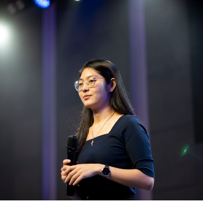
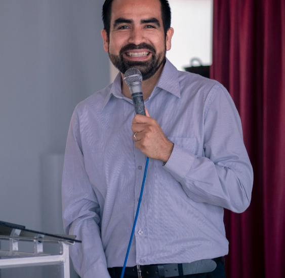

Networking
Conecte-se com profissionais, empresas e estudantes de tecnologia de todo o pais.
O maior evento de tecnologia e inovação do ano
Conecte-se com profissionais, empresas e estudantes de tecnologia de todo o pais.
Aprenda com especialistas sobre as últimas tendências em IA, desenvolvimento segurança e muito mais.
Participe de Workshops hands-on e desenvolva novas habilidades técnicas durante o evento.
O TechEvent 2026 é o principal encontro de tecnologia do Brasil, reunido desenvolvedores, designers, gestores e estudantes para três dias intensos de aprendizado, inovação e networking. Prepare-se para uma expericências transformadoras que vão impulsionar sua carreira!
Conheça os especialistas que vão compartilhar conhecimento e experiências no TechEvent 2026

Pesquisadora em IA
Inteligência Artificial na Educação

Arquiteto de Software
Desenvolvimento de Software Moderno
Design Lead
UX | UI Design e Acessibilidade